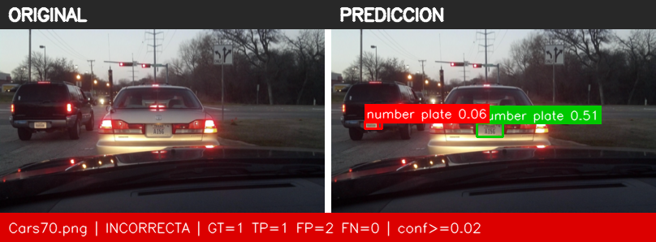
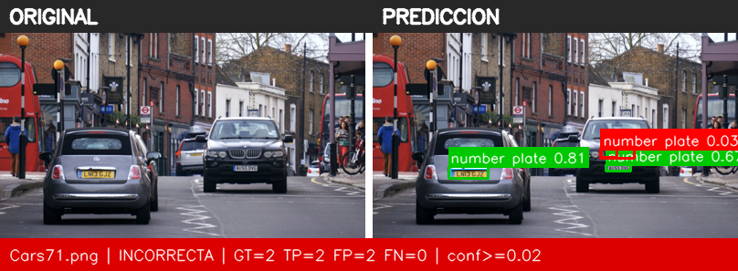
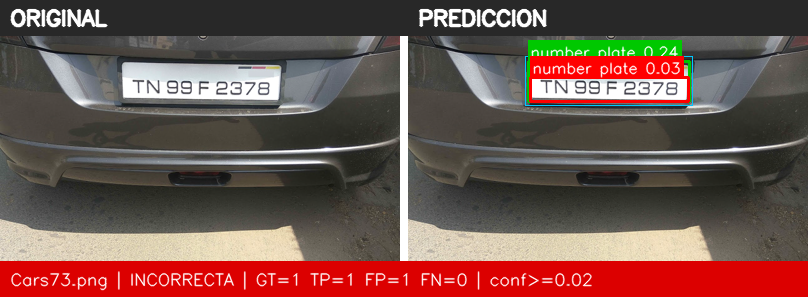
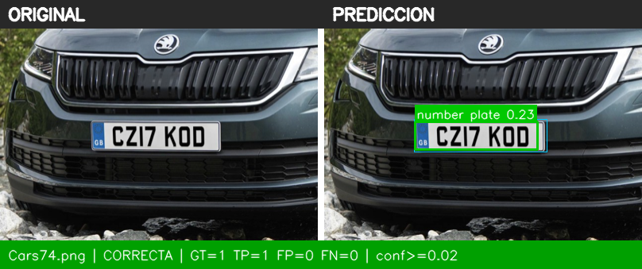
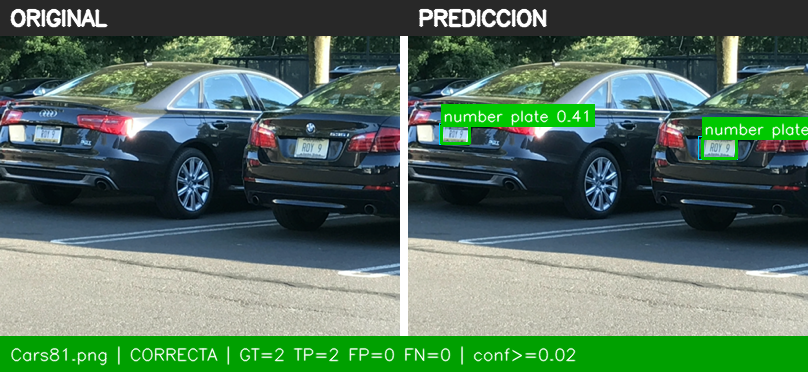

Izquierda: imagen original sin marcas. Derecha: inferencia (conf ≥ 0.02). Verde = acierto (IoU ≥ 0.5), rojo = falso positivo, cian fino = ground truth.
YOLOE con prompt de texto «number plate». Prompt (máx. AP50) y umbral (máx. F1) elegidos solo con validación y fijados antes de evaluar test.
| approach | yoloe |
| model | yoloe-26s-seg.pt |
| image_size | 640 |
| selection_split | val |
| prompt_criterion | max val AP50 |
| threshold_criterion | max val F1 (IoU >= 0.5) |
| prompt | number plate |
| val_ap50_per_prompt | {"license plate": 0.6642, "car license plate": 0.6767, "number plate": 0.8612, "vehicle registration plate": 0.8445, "plate": 0.2139, "car": 0.0} |
| val_at_selected | {"precision": 0.7273, "recall": 0.9412, "f1": 0.8205, "tp": 16, "fp": 6, "fn": 1} |
| confidence_threshold | 0.02 |
| iou_match_threshold | 0.5 |
| test_images | 5 |
| test_ap50 | 1.0 |
| test_tp | 7 |
| test_fp | 5 |
| test_fn | 0 |
| test_precision | 0.5833 |
| test_recall | 1.0 |
| test_f1 | 0.7368 |
| images_correctas | 2 |
| images_incorrectas | 3 |
| images_sin_detecciones | 0 |




